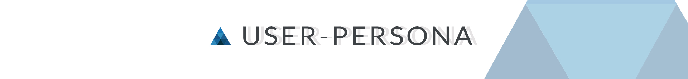
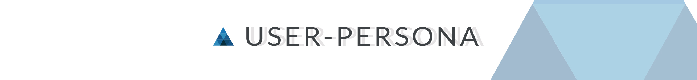

ECORP es un proyecto que mezcla la realidad virtual y los avatares roboticos en el contexto del cuerpo de bomberos.
La meta de este proyecto era crear un producto que pudiese permitir la instrucción de nuevos miembros y permitir a miembros que ya no tienen el maximo de sus capacidades ser utiles para su equipo.
ECORP busca proyectar una tecnologia al futuro y darle un posible uso. En este caso elegí la realidad virtual con avatares roboticos en un contexto como el cuerpo de bomberos devido a lo amplio que puede ser el rango etario y la diversidad entre los miembros que conforman el cuerpo de bomberos.
El primer paso fue la investigación de tecnologias (realidad virtual), parte de su desarrollo y aplicación actual para así abrir paso al benchmarking


 
